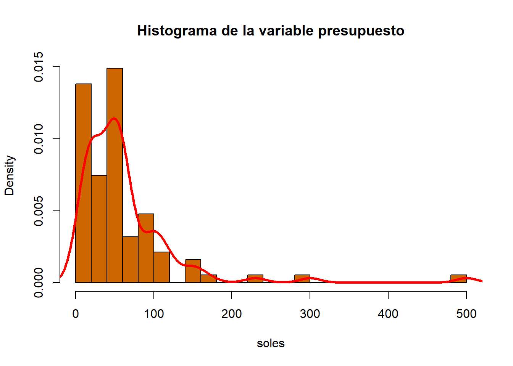

Warning: package 'readr' was built under R version 4.1.3Warning: package 'dplyr' was built under R version 4.1.3Nosotros estamos interesados en saber el grado de satisfacción que presentan los alumnos y personal de UTEC frente al cambio de concesionario del comedor principal ubicado en piso 2 de la universidad.
En el segundo piso de UTEC se encuentra el comedor, espacio en el que hay una concesionaria encargada de vender almuerzos a alumnos y personal de la universidad, aprovechando la conveniencia de ubicarse dentro de esta. Este servicio es de gran importancia, pues es la principal fuente de alimentación de muchos alumnos de la universidad.
Este estudio fue realizado principalmente por la motivación de querer conocer la opinión de los usuarios sobre la cafetería en UTEC. Para profundizar el análisis, se ha decidido recolectar igualmente datos adicionales a la opinión, e igualmente se han recolectado datos sobre la concesionaria del ciclo previo (2022-2).
Verificar si los estudiantes están contentos con el servicio actual.
Comparar la opinión de usuarios, con respecto al concesionario actual y al anterior.
Ayudar a conseguir una mejora en la experiencia de los usuarios.
Warning: package 'readr' was built under R version 4.1.3Warning: package 'dplyr' was built under R version 4.1.3Limpiando la variable carrera :
DF$carrera <- gsub("IngenieríaMecatronica.", "Ingeniería Mecatronica", DF$carrera)Limpiando ‘presupuesto’
DF$presupuesto <- gsub("10 a 30 soles", "20", DF$presupuesto)
DF$presupuesto <- gsub("30 a 50 soles", "40", DF$presupuesto)
DF$presupuesto <- gsub("50 a 70 soles", "60", DF$presupuesto)
DF$presupuesto <- gsub("70 a 90 soles", "80", DF$presupuesto)
DF$presupuesto <- gsub("90 soles a mas", "100", DF$presupuesto)
DF$presupuesto <- as.numeric(DF$presupuesto)
table(DF$presupuesto)
5 7 8 10 13 15 18 20 25 30 40 45 50 52 60 65 70 75 80 100
1 1 1 6 1 1 1 14 3 1 10 1 13 1 13 1 2 2 1 9
120 150 170 230 300 500
4 3 1 1 1 1 Limpiando ‘tiempo_espera’
DF$tiempo_espera <- gsub("5 a 10 minutos", 7, DF$tiempo_espera)
DF$tiempo_espera <- gsub("10 a 15 minutes", 12, DF$tiempo_espera)
DF$tiempo_espera <- gsub("15 a 20 minutos", 17, DF$tiempo_espera)
DF$tiempo_espera <- as.numeric(DF$tiempo_espera)
table(DF$tiempo_espera)
1 2 3 5 7 8 10 12 13 15 17 20 25 30 40 80
1 1 1 10 15 1 14 13 1 7 4 16 1 7 1 1 Limpiando ‘tiempo_disponible’
DF$tiempo_disponible <- gsub("20 minutos", 20, DF$tiempo_disponible)
DF$tiempo_disponible <- gsub("40 minutos", 20, DF$tiempo_disponible)
DF$tiempo_disponible <- gsub("1 hora", 60, DF$tiempo_disponible)
DF$tiempo_disponible <- gsub("1 hora a mas", "", DF$tiempo_disponible)
DF$tiempo_disponible <- gsub("60 a mas", "", DF$tiempo_disponible)
DF$tiempo_disponible <- as.numeric(DF$tiempo_disponible)
table(DF$tiempo_disponible)
20 25 30 35 40 45 50 60 100 120 360
19 4 15 3 7 5 5 32 1 1 1 Corrigiendo el tipo de valor de ‘ciclo’, ‘consumo_semanal_actual’, y ‘consumo_semanal_anterior’
DF$consumo_semanal_actual <- as.numeric(DF$consumo_semanal_actual)
DF$consumo_semanal_previo <- as.numeric(DF$consumo_semanal_previo)Rellenando algunos SI faltantes en si consumen actualmente:
DF$consume_actualmente[1:15]<-"Sí"Limpiando datos vacíos en precio actual y previo
DF$precio_actual[DF$precio_actual == ''] <- NA
DF$precio_previo[DF$precio_previo == ''] <- NAsummary(DF$tiempo_espera) Min. 1st Qu. Median Mean 3rd Qu. Max. NA's
1.00 7.00 12.00 14.11 20.00 80.00 60 Coeficiente de variación
round(sd(DF$tiempo_espera,na.rm = TRUE)/mean(DF$tiempo_espera, na.rm = TRUE),digits = 2)[1] 0.73boxplot(DF$tiempo_espera, horizontal = TRUE, main = "Tiempo de espera", xlab = "Tiempo (min)", outpch = 25)
Para esta variable numérica, hacemos uso de los descriptores numéricos para un mejor análisis, como podemos apreciar la mayoría de datos se encuentran entre 7 y 20 min y contamos con solo 2 datos atípicos, ahora nuestro coeficiente de variación es 0.73, por lo tanto no podemos hacer uso de la media debido a que es muy elevado, pero usando la mediana podemos decir que la mitad de los datos se ubica en 12 min.
boxplot(DF$tiempo_disponible, horizontal = TRUE, main = "Tiempo disponible", xlab = "Tiempo (min)", outpch = 25)mosaicplot(DF$ciclo ~ DF$consume_actualmente,main="Relacion entre el ciclo y si consume o no en el comedor",color=2:7, )
En esta gráfica analizamos la relación entre el ciclo cursado por los estudiantes y si consumen o no en la cafetería. Podemos observar que de la muestra observada, los estudiantes de tercer, cuarto y quinto ciclo son aquellos que acuden más a la cafetería actualmente, e igualmente conforman la mayor parte de la muestra.
DF$menu_previo[DF$menu_previo == ''] <- NA
DF$menu_actual[DF$menu_actual == ''] <- NA
DF %>%filter(consumio_previo=="Si" & consume_actualmente=="Sí") ->barplot4nrow(barplot4)[1] 13barplot(table(barplot4$menu_previo),main="Consumo en ambas consesionarios",cex.names = 0.8, ylim = c(0,70))
grid(nx = NA, ny = NULL, lwd = 1, lty = 1, col = "gray")Para elaborar este gráfico se busco seleccionar a las personas que consumían anteriormente y que consumen actualmente, y de igual forma se puede apreciar que el menú mas consumido sigue siendo el estudiantil.
DF$precio_actual <- factor(DF$precio_actual, levels = c("Terrible", "Mal", "Regular", "Bien", "Muy Bien"), ordered = TRUE)
DF$precio_previo <- factor(DF$precio_previo, levels = c("Terrible", "Mal", "Regular", "Bien", "Muy Bien"), ordered = TRUE)
DF %>%
group_by(precio_previo) %>%
summarise(n()) -> PP
DF %>%
group_by(precio_actual) %>%
summarise(n()) -> PA
PP <- PP[-nrow(PP), ]
PA <- PA[-nrow(PA), ]
PJ <- cbind(PP, PA)
names(PJ) <- c("pp", "ppn", "pa", "pan")
barplot(t(as.matrix(PJ[, c(2, 4)])) ,col = c("#0DADFC", "darkblue"), beside = TRUE, main = "Consideración del precio en el comedor", names.arg = levels(PJ$pp))
legend("topright", c("Precio concesionaria anterior", "Precio concesionaria actual"), fill = c("#0DADFC", "darkblue"), bty = "n", cex = 0.6)Como podemos apreciar en este gráfico, podemos ver como hay una mayor cantidad de gente que considera que los precios actuales del comedor son malos y terribles, sin embargo también los consideran mas regulares, en cambio el comedor anterior tiene mas valoraciones de bien y muy bien que el actual
cyl_table <- table(DF$consume_actualmente)
gear_table <- table(DF$consumio_previo)
barplot(rbind(cyl_table,gear_table), beside=TRUE,
col=c("royalblue","red"), main="Consumo en los consecionarios",
xlab="Consumo", ylab="Frecuencia")Warning in rbind(cyl_table, gear_table): number of columns of result is not a
multiple of vector length (arg 2)legend(x = "bottomright", legend = c("Actual", "Previo"), fill = c("royalblue", "red"),
title = "Leyenda") A partir de esta comparación entre la variable consumen actualmente y previo, se obtiene que la proporción de personas encuestadas que consumen ahora es 95 menor que la proporción de personas encuestadas que consumían antes 104 y la proporción de personas encuestadas que no consumen ahora 60 es mayor que la proporción de personas encuestadas que no consumían antes 51. Esto podría ser un indicador de que la nueva concesionaria tiene menos clientes en comparación con la anterior concesionaria resaltando una preferencia mayor de los consumidores del comedor por esta ultima .
Mediante el análisis descriptivo realizado en el desarrollo, obtuvimos varias conclusiones justificables mediante nuestros gráficos. Donde pudimos despejar varias incógnitas como la ¿A que ciclo pertenecen los estudiantes mas recurrentes?,¿Cual es la principal razón por el que no consumen?, ¿Cual es el tiempo de espera?, entre otros. Con los gráficos recopilados podemos ver las debilidades como las fortalezas de la concesionario actual, compararlas con la anterior. Finalmente con el análisis podemos presentar posibles oportunidades de mejora a la administración de UTEC para que la cafetería pueda brindar un optimo servicio.
Se realiza un experimento, donde se extrae un estudiante/personal de UTEC al azar, y se observa si consume o no en la cafetería en el presente ciclo 2023-1. Nos quedamos con una variable aleatoria versátil que se puede relacionar con cualquier parte del estudio, para relacionar otros datos con el hecho de que consuman o no en la cafetería.
\[ \mathbb{X}= \begin{cases} 1 & \text{Consume en la cafetería actualmente}\\ 0 & \text{No consume en la cafetería actualmente}\\ \end{cases} \]
# FALTA MUESTRAS ESPACIO MUESTRAL
x1 <- nrow(DF %>% filter(consume_actualmente=="Sí"))
x0 <- nrow(DF %>% filter(consume_actualmente=="No"))
xtotal <- nrow(DF)
# Probabilidad de cada evento atómico
xtotal[1] 154x1/xtotal[1] 0.0974026x0/xtotal[1] 0.3896104# Comprobando atomicidad
(x1+x0)/xtotal[1] 0.487013Espacio de resultados teórico y probabilidad empírica de cada evento atómico:
A1: Consume en la cafetería actualmente:
\[
\mathbb{S} = \{Sí\}
\]
\[ \mathbb{P}(A1): \]
nrow(DF %>% filter(consume_actualmente=="Sí"))/nrow(DF)[1] 0.0974026A2: No consume en la cafetería actualmente:
\[ \mathbb{S} = \{No\} \]
\[ \mathbb{P}(A2): \]
nrow(DF %>% filter(consume_actualmente=="No"))/nrow(DF)[1] 0.3896104Se realiza un experimento, donde se elige a una persona en UTEC que consume en la cafetería en el presente ciclo 2023-1, y se observa el tiempo de espera que ha reportado para comer en la cafetería. Nos quedamos con una variable aleatoria que clasifica los tiempos de espera reportado según si se consideran óptimos (menos de 5), aceptable (entre 5 y 15), o excesivo (15 o más), la cual se puede relacionar con demás aspectos del estudio.
\[ \mathbb{Y}= \begin{cases} 1 & \text{Su tiempo de espera es mayor o igual a 0 minutos, y menor a 5}\\ 2 & \text{Su tiempo de espera es mayor o igual a 5 minutos, y menor a 15}\\ 3 & \text{Su tiempo de espera es mayor o igual a 15}\\ \end{cases} \]
# ESPACIO MUESTRAL
y1 <- nrow(DF %>% filter(consume_actualmente=="Sí" & tiempo_espera < 5))
y2 <- nrow(DF %>% filter(consume_actualmente=="Sí" & tiempo_espera >= 5 & tiempo_espera < 15))
y3 <- nrow(DF %>% filter(consume_actualmente=="Sí" & tiempo_espera >= 15))
ytotal <- nrow(DF %>% filter(consume_actualmente=="Sí"))
# Probabilidad de cada evento atómico
ytotal[1] 15y1/ytotal[1] 0y2/ytotal[1] 0.9333333y3/ytotal[1] 0.06666667# Comprobando atomicidad
(y1+y2+y3)/ytotal[1] 1Espacio de resultados teórico y probabilidad empírica de cada evento atómico:
B1: El tiempo de espera es mayor o igual a 0 minutos, y menor a 5:
\[ \mathbb{S}=[0,5[ \]
\[ \mathbb{P}(B1): \]
nrow(DF %>% filter(consume_actualmente=="Sí" & tiempo_espera < 5))/nrow(DF %>% filter(consume_actualmente=="Sí"))[1] 0Tiempo de espera mayor o igual a 5 minutos, y menor a 15:
\[ \mathbb{S}= [5,15[ \]
\[ \mathbb{P}(B2): \]
nrow(DF %>% filter(consume_actualmente=="Sí" & tiempo_espera >= 5 & tiempo_espera < 15))/nrow(DF %>% filter(consume_actualmente=="Sí"))[1] 0.9333333Tiempo de espera mayor o igual a 15:
\[ \mathbb{S}=[15,+\infty[ \]
\[ \mathbb{P}(B3): \]
nrow(DF %>% filter(consume_actualmente=="Sí" & tiempo_espera >= 15))/nrow(DF %>% filter(consume_actualmente=="Sí"))[1] 0.06666667Sabemos que para determinar que dos eventos son independientes se debe cumplir:
\[\mathbb{}P(A∩B)=P(A)*P(B)\]
Definiendo a mis Eventos A y B:
A= Escoger a una persona el cual pertenezca al sexto ciclo.
B= Escoger a una persona consuma el menú Ejecutivo actual.
nrow(DF %>% filter(ciclo==6 & menu_actual=="Ejecutivo"))/nrow(DF %>% filter(consume_actualmente=="Sí" & rol=="Alumno"))[1] 0.07142857Mediante el uso de filter obtenemos la probabilidad empírica de nuestra intersección, para comprobar si nuestras dos variables son independientes debemos obtener un resultado similar al multiplicar la probabilidad de cada uno.
nrow(DF %>% filter(menu_actual=="Ejecutivo"))/nrow(DF %>% filter(rol=="Alumno"))[1] 0.1372549nrow(DF %>% filter(ciclo==6))/nrow(DF %>% filter(rol=="Alumno"))[1] 0.07843137nrow(DF %>% filter(menu_actual=="Ejecutivo"))/nrow(DF %>% filter(rol=="Alumno"))*
nrow(DF %>% filter(ciclo==6))/nrow(DF %>% filter(rol=="Alumno")) [1] 0.01076509Halla la probabilidad de A y luego de B,posteriormente las multiplicamos.
Como podemos observar, las probabilidades de la intersección son similares, lo que nos informa que las variables aleatorias del ciclo al que pertenecen cada alumno son independientes al menú que consumen.
c(nrow(DF %>% filter(menu_actual=="Ejecutivo"))/nrow(DF %>% filter(rol=="Alumno"))*
nrow(DF %>% filter(ciclo==1))/nrow(DF %>% filter(rol=="Alumno")),nrow(DF %>% filter(menu_actual=="Ejecutivo"))/nrow(DF %>% filter(rol=="Alumno"))*
nrow(DF %>% filter(ciclo==2))/nrow(DF %>% filter(rol=="Alumno")),nrow(DF %>% filter(menu_actual=="Ejecutivo"))/nrow(DF %>% filter(rol=="Alumno"))*
nrow(DF %>% filter(ciclo==3))/nrow(DF %>% filter(rol=="Alumno")),nrow(DF %>% filter(menu_actual=="Ejecutivo"))/nrow(DF %>% filter(rol=="Alumno"))*
nrow(DF %>% filter(ciclo==4))/nrow(DF %>% filter(rol=="Alumno")),nrow(DF %>% filter(menu_actual=="Ejecutivo"))/nrow(DF %>% filter(rol=="Alumno"))*
nrow(DF %>% filter(ciclo==5))/nrow(DF %>% filter(rol=="Alumno")),nrow(DF %>% filter(menu_actual=="Ejecutivo"))/nrow(DF %>% filter(rol=="Alumno"))*
nrow(DF %>% filter(ciclo==6))/nrow(DF %>% filter(rol=="Alumno")),nrow(DF %>% filter(menu_actual=="Ejecutivo"))/nrow(DF %>% filter(rol=="Alumno"))*
nrow(DF %>% filter(ciclo==7))/nrow(DF %>% filter(rol=="Alumno")),nrow(DF %>% filter(menu_actual=="Ejecutivo"))/nrow(DF %>% filter(rol=="Alumno"))*
nrow(DF %>% filter(ciclo==8))/nrow(DF %>% filter(rol=="Alumno")),nrow(DF %>% filter(menu_actual=="Ejecutivo"))/nrow(DF %>% filter(rol=="Alumno"))*
nrow(DF %>% filter(ciclo==9))/nrow(DF %>% filter(rol=="Alumno")),nrow(DF %>% filter(menu_actual=="Ejecutivo"))/nrow(DF %>% filter(rol=="Alumno"))*
nrow(DF %>% filter(ciclo==10))/nrow(DF %>% filter(rol=="Alumno")))->ejecu
c(nrow(DF %>% filter(menu_actual=="Estudiantil"))/nrow(DF %>% filter(rol=="Alumno"))*
nrow(DF %>% filter(ciclo==1))/nrow(DF %>% filter(rol=="Alumno")),nrow(DF %>% filter(menu_actual=="Estudiantil"))/nrow(DF %>% filter(rol=="Alumno"))*
nrow(DF %>% filter(ciclo==2))/nrow(DF %>% filter(rol=="Alumno")),nrow(DF %>% filter(menu_actual=="Estudiantil"))/nrow(DF %>% filter(rol=="Alumno"))*
nrow(DF %>% filter(ciclo==3))/nrow(DF %>% filter(rol=="Alumno")),nrow(DF %>% filter(menu_actual=="Estudiantil"))/nrow(DF %>% filter(rol=="Alumno"))*
nrow(DF %>% filter(ciclo==4))/nrow(DF %>% filter(rol=="Alumno")),nrow(DF %>% filter(menu_actual=="Estudiantil"))/nrow(DF %>% filter(rol=="Alumno"))*
nrow(DF %>% filter(ciclo==5))/nrow(DF %>% filter(rol=="Alumno")),nrow(DF %>% filter(menu_actual=="Estudiantil"))/nrow(DF %>% filter(rol=="Alumno"))*
nrow(DF %>% filter(ciclo==6))/nrow(DF %>% filter(rol=="Alumno")),nrow(DF %>% filter(menu_actual=="Estudiantil"))/nrow(DF %>% filter(rol=="Alumno"))*
nrow(DF %>% filter(ciclo==7))/nrow(DF %>% filter(rol=="Alumno")),nrow(DF %>% filter(menu_actual=="Estudiantil"))/nrow(DF %>% filter(rol=="Alumno"))*
nrow(DF %>% filter(ciclo==8))/nrow(DF %>% filter(rol=="Alumno")),nrow(DF %>% filter(menu_actual=="Estudiantil"))/nrow(DF %>% filter(rol=="Alumno"))*
nrow(DF %>% filter(ciclo==9))/nrow(DF %>% filter(rol=="Alumno")),nrow(DF %>% filter(menu_actual=="Estudiantil"))/nrow(DF %>% filter(rol=="Alumno"))*
nrow(DF %>% filter(ciclo==10))/nrow(DF %>% filter(rol=="Alumno")))->estudia
c(nrow(DF %>% filter(menu_actual=="Economico"))/nrow(DF %>% filter(rol=="Alumno"))*
nrow(DF %>% filter(ciclo==1))/nrow(DF %>% filter(rol=="Alumno")),nrow(DF %>% filter(menu_actual=="Economico"))/nrow(DF %>% filter(rol=="Alumno"))*
nrow(DF %>% filter(ciclo==2))/nrow(DF %>% filter(rol=="Alumno")),nrow(DF %>% filter(menu_actual=="Economico"))/nrow(DF %>% filter(rol=="Alumno"))*
nrow(DF %>% filter(ciclo==3))/nrow(DF %>% filter(rol=="Alumno")),nrow(DF %>% filter(menu_actual=="Economico"))/nrow(DF %>% filter(rol=="Alumno"))*
nrow(DF %>% filter(ciclo==4))/nrow(DF %>% filter(rol=="Alumno")),nrow(DF %>% filter(menu_actual=="Economico"))/nrow(DF %>% filter(rol=="Alumno"))*
nrow(DF %>% filter(ciclo==5))/nrow(DF %>% filter(rol=="Alumno")),nrow(DF %>% filter(menu_actual=="Economico"))/nrow(DF %>% filter(rol=="Alumno"))*
nrow(DF %>% filter(ciclo==6))/nrow(DF %>% filter(rol=="Alumno")),nrow(DF %>% filter(menu_actual=="Economico"))/nrow(DF %>% filter(rol=="Alumno"))*
nrow(DF %>% filter(ciclo==7))/nrow(DF %>% filter(rol=="Alumno")),nrow(DF %>% filter(menu_actual=="Economico"))/nrow(DF %>% filter(rol=="Alumno"))*
nrow(DF %>% filter(ciclo==8))/nrow(DF %>% filter(rol=="Alumno")),nrow(DF %>% filter(menu_actual=="Economico"))/nrow(DF %>% filter(rol=="Alumno"))*
nrow(DF %>% filter(ciclo==9))/nrow(DF %>% filter(rol=="Alumno")),nrow(DF %>% filter(menu_actual=="Economico"))/nrow(DF %>% filter(rol=="Alumno"))*
nrow(DF %>% filter(ciclo==10))/nrow(DF %>% filter(rol=="Alumno")))->econo
plot(econo,type="l",pch=16,col="blue",main="Menús",lwd=2,xlab="Ciclo",ylab="Probabilidad de que su menú sea x",las=1,ylim=c(0,0.15))
lines(estudia, type="l",pch=16,col="red",main="Menu Estudiantil",lwd=2,xlab="Ciclo",ylab="Probabilidad de que su menu sea Estudiantil",las=1)
lines(ejecu, type="l",pch=16,col="orange",main="Menu Ejecutivo",lwd=2,xlab="Ciclo",ylab="Probabilidad de que su menu sea ejecutivo",las=1)
legend("topright",fill=c("blue","red","orange"),legend=c("Económico","Estudiantil","Ejecutivo"))Deseamos saber cual es la probabilidad de que una persona escoa el menú Estudiantil dado que consume actualmente.
C=Escoger una persona y su menú es el estudiantil.
D=Escoger una persona y este consume actualmente.
Deseamos saber la intersección de los dos eventos.Entonces aplicamos la formula de la condicional.
\[ \mathbb{}P(C∩D)=P(C|D)*P(D)=P(D|C)*P(C) \]
Hallamos la probabilidad de C y D.
nrow(DF %>% filter(menu_actual=="Estudiantil"))/nrow(DF)->C
nrow(DF %>% filter(consume_actualmente=="Sí"))/nrow(DF)->DHallamos la siguiente expresión:
\(P(C|D)*P(D)\)
nrow(DF %>% filter(menu_actual=="Estudiantil"))/nrow(DF %>% filter(consume_actualmente=="Sí"))*D[1] 0.3311688Hallamos la siguiente expresión:
\(P(D|C)*P(C)\)
Primero hallamos \(P(D|C)\)
nrow(DF %>% filter(consume_actualmente=="Sí"))/nrow(DF %>% filter(menu_actual=="Estudiantil"))[1] 0.2941176Podemos ver que la probabilidad de P(B|A) es mayor a 1, esto nos quiere decir que el espacio maestral de A esta incluido dentro de D, lo consideramos como 1, ya que si el evento D sucede se da por hecho que el C ha sucedido
Entonces nos queda:
1*C[1] 0.3311688Lo cual es similar al filtrar los datos,usando como el denominador el espacio muestral completo de DF :
nrow(DF %>% filter(consume_actualmente=="Sí" & menu_actual=="Estudiantil"))/nrow(DF)[1] 0.05844156Podemos ver que nuestra igualdad cumple. Por lo que nuestros eventos son dependientes.Ademas también lo podemos verificar ya que la probabilidad de su intersección no es igual a la multiplicación de cada una.
Se cumple la siguiente expresión \(P(C∩D)≠P(C)*P(D)\)
C*D[1] 0.0322567\(X \sim Gamma(\alpha,\lambda)\)
Para hallar los valores de α y λ realizaremos un sistema de ecuaciones con los datos que obtenemos de R, sabemos que la varianza tiene valor de 105.9671 y la media tiene valor de 14.10638. Remplazaremos en el siguiente sistema de ecuaciones:
| \(E(X)=\frac{\alpha}{\lambda}\) | MEDIA = 14.10638. |
| \(Var(X)=\frac{\alpha}{\lambda^2}\) | VARIANZA = 105.9671 |
Obtenemos los valore α y λ, estos valores solo son parámetros de la función gamma
mean(DF$tiempo_espera,na.rm=T) [1] 14.10638var(DF$tiempo_espera,na.rm=T) [1] 105.9671alf<-14.10638*14.10638/ 105.9671
lamb<-14.10638/ 105.9671Ahora realizamos el histograma y la línea de densidad de la variable TIEMPO DE ESPERA y añadimos la curva de la función gamma con los parámetros encontrados en el ítem anterior. En donde podemos observar que estas dos curvas son similares
hist(DF$tiempo_espera, breaks = 22, freq = FALSE, main = "Histograma de la variabletiempo de espera", xlab = "tiempo de espera", col = "darkorange3")
lines(density(DF$tiempo_espera, na.rm = TRUE), col = "red", lwd = 3)
curve(dgamma(x,14.10638*14.10638/ 105.9671,14.10638/ 105.9671),lwd = 2, col="blue", add = T) Ahora cómo verificamos que en realidad sigue la distribución Gamma. Generaremos una muestra aleatoria de 500 observaciones con la función gamma utilizando la librería gamlss para poder realizar la simulación
library(gamlss)Warning: package 'gamlss' was built under R version 4.1.3Loading required package: splinesLoading required package: gamlss.data
Attaching package: 'gamlss.data'The following object is masked from 'package:datasets':
sleepLoading required package: gamlss.distWarning: package 'gamlss.dist' was built under R version 4.1.3Loading required package: MASSWarning: package 'MASS' was built under R version 4.1.3
Attaching package: 'MASS'The following object is masked from 'package:dplyr':
selectLoading required package: nlme
Attaching package: 'nlme'The following object is masked from 'package:dplyr':
collapseLoading required package: parallel ********** GAMLSS Version 5.4-12 ********** For more on GAMLSS look at https://www.gamlss.com/Type gamlssNews() to see new features/changes/bug fixes.n <- 500
set.seed(12345)
ma <- rGA(n=n, mu=alf, sigma=lamb)Ahora usaremos la función fitDist
Ahora usaremos la función fitDist con type='realplus' ya que nuestra muestra aleatoria tiene valores en los reales positivos. Los resultados lo almacenaremos en la variable contenedor y para obtener la lista de los mejores modelos con su respectivo AIC lo calcularemos mediantecontenedor$fits .
La función fitDist del paquete gamlss nos permite explorar cuales son las mejores distribuciones que puede explicar nuestra muestra aleatoria creada.
AIC: es una medidas de calidad para un conjunto de datos, a menor valor de AIC mejor es el modelo candidato a estudiar
contenedor <- fitDist(y=ma, type='realplus')
|
| | 0%
|
|=== | 4%
|
|====== | 9%
|
|========= | 13%
|
|============ | 17%Warning in MLE(ll2, start = list(eta.mu = eta.mu, eta.sigma = eta.sigma), :
possible convergence problem: optim gave code=1 false convergence (8)
|
|=============== | 22%
|
|================== | 26%
|
|===================== | 30%
|
|======================== | 35%
|
|=========================== | 39%
|
|============================== | 43%Warning in MLE(ll2, start = list(eta.mu = eta.mu, eta.sigma = eta.sigma), :
possible convergence problem: optim gave code=1 false convergence (8)
|
|================================= | 48%Warning in MLE(ll2, start = list(eta.mu = eta.mu, eta.sigma = eta.sigma), :
possible convergence problem: optim gave code=1 false convergence (8)
|
|===================================== | 52%Warning in MLE(ll2, start = list(eta.mu = eta.mu, eta.sigma = eta.sigma), :
possible convergence problem: optim gave code=1 false convergence (8)
|
|======================================== | 57%
|
|=========================================== | 61%
|
|============================================== | 65%
|
|================================================= | 70%
|
|==================================================== | 74%
|
|======================================================= | 78%
|
|========================================================== | 83%Error in solve.default(oout$hessian) :
Lapack routine dgesv: system is exactly singular: U[4,4] = 0
|
|============================================================= | 87%Error in solve.default(oout$hessian) :
Lapack routine dgesv: system is exactly singular: U[4,4] = 0
|
|================================================================ | 91%
|
|=================================================================== | 96%
|
|======================================================================| 100%Warning in nlminb(start = start, objective = f, control = optim.control):
NA/NaN function evaluationWarning in MLE(ll4, start = list(eta.mu = eta.mu, eta.sigma = eta.sigma, :
possible convergence problem: optim gave code=1 function evaluation limit
reached without convergence (9)#Ahora mostramos los valores AIC
contenedor$fits GA GG BCCG BCCGo exGAUS GIG BCPE
41.64935 41.86595 41.93903 41.93903 42.47334 43.64935 43.87114
BCPEo GB2 BCT BCTo LOGNO2 LOGNO IG
43.87114 43.88685 43.93903 43.93903 46.26678 46.26678 46.34586
IGAMMA WEI3 WEI WEI2 EXP PARETO2o PARETO2
53.83497 80.09708 80.09708 80.09708 1644.00544 1646.00784 1646.00847
GP
1646.00888 Ahora podemos observar mediante la lista que el menor valor AIC es el de GA osea Gamma, lo que quiere decir que la distribución gamma explica mejor los datos de la muestra aleatoria creada.
En adición, podemos calcular los parámetros α y λ de la muestra aleatoria creada y comparar con nuestros valores alfa y lambda de nuestra variable TIEMPO DE ESPERA
contenedor$mu[1] 1.900288contenedor$sigma [1] 0.1330046alf<-14.10638*14.10638/ 105.9671 #alfa y lamda de la varible tiempo de espera
lamb<-14.10638/ 105.9671
alf[1] 1.877847lamb[1] 0.1331204Podemos observar que alfa=1.900288 y lamba=0.133046 corresponden a nuestra muestra aleatoria, mientras que los valores alfa=1.877847 y lambda=0.1331204. En consecuencia la función fitDists logró identificar correctamente la distribución y los parámetros alfa y lambda respectivamente, con lo cual la variable TIEMPO DE ESPERA sigue una distribución gamma
Ahora después de obtener los valores de alfa y lambda y vemos que se cumple gráficamente podemos realizar un ejercicio
1. Cual es la probabilidad de que un estudiante de Utec espere más 20 min en la cafetería.
alf<-14.10638*14.10638/ 105.9671
lamb<-14.10638/ 105.9671
pgamma(20, alf, lamb,lower.tail=FALSE) [1] 0.2277175vemos que el porcentaje teórico es de 22.77%, mientras que el real es de 27.65%. El valor real es el número de casos favorables que tenemos en nuestra muestra entre el número de nuestro universo de los cuales consumen actualmente en la cafetería. En este caso nuestra muestra es de 94 personas, ya que estamos tomando el tiempo de espera de los que si consumen actualmente en nuestra cafetería
Nuestra aproximación es buena y no esta muy alejada del valor real.
Con esta gráfica podemos observar cual es la probabilidad de que un estudiante espere entre 0 a 20 min en la cafetería
plot(dgamma(0:20,alf,lamb ), type = "h",col = "68", lwd = 2,ylab = "Probabilidad de que espere", xlab = "Número de minutos")
abline (v = mean (DF$tiempo_espera,na.rm=T), lwd = 3, lty = 2) Podemos concluir que nuestra variable si cumple con el comportamiento de una distribución gamma, por otro lado observamos que la probabilidad de que un estudiante espera más minutos en la cafetería que la media va disminuyendo. Otro punto a recalcar es que si fuéramos a recolectar más encuestas observaríamos como nuestra variable tiempo de espera se va asemejando cada vez más a una distribución gamma.
\(X \sim BinNegativa(n,p)\)
Al ser una variable discreta podemos aproximar a cualquier modelo discreto. En esta caso lo aproximaremos al modelo BINOMIAL NEGATIVO,
\(X\) cuenta el número de ensayos o intentos con \(Ber(p)\) independientes que debe realizar hasta lograr n éxitos con n>1.
Definimos nuestra Bernulli subyacente: en este caso a nuestro éxito lo definiremos como las personas que consuman 2 días en el comedor de Utec actualmente. Hallamos la probabilidad de éxito.
X<-DF$consumo_semanal_actual[DF$consumo_semanal_actual==2 & !is.na(DF$consumo_semanal_actual)]
sum(table(X))[1] 32sum(table(DF$consumo_semanal_actual[!is.na(DF$consumo_semanal_actual)]))[1] 94P_exito<-round(sum(table(X))/sum(table(DF$consumo_semanal_actual[!is.na(DF$consumo_semanal_actual)])),2)
P_exito[1] 0.34\(X\) : # de personas que consumen actualmente en la cafetería, hasta obtener que n personas consuman 2 días en la cafetería según nuestro estudio realizado a los estudiantes de Utec.
\[\mathbb{x\sim BinBegativa(n,p)}= \begin{cases} n & \text{número de exitos(de personas)} \\ p & \text{probabilidad de éxitp definido como: personas que consumen 2 días en la cafetería} \end{cases} \]
Ahora construimos nuestra gráfica de densidad, este caso queremos que n= 5 (personas consuman dos días)
numero_de_personas<-sum(table(DF$consumo_semanal_actual[!is.na(DF$consumo_semanal_actual)]))
prob_exito <-0.34
num_personas_max <- numero_de_personas
# Crear una secuencia de valores para el número de personas
num_personas_seq <- 1:num_personas_max
# Calcular la probabilidad correspondiente a que haya 5 éxitos en cada número de personas
probabilidades <- dnbinom(5, size = num_personas_seq, prob = prob_exito)
# Graficar la densidad
plot(num_personas_seq, probabilidades, type = "l", lwd = 2,
xlab = "Cantidad de personas", ylab = "Probabilidad",
main = "Probabilidad de 5 éxitos en función de la cantidad de personas")Podemos observar que la probabilidad de encontrar 5 personas que coman 2 días en la cafetería dada la cantidad de personas disminuye, esto se debe a que a medida que aumenta el tamaño de la muestra, hay más variabilidad y más posibilidades de que los éxitos se distribuyan de diferentes maneras entre las personas. Por lo tanto, la probabilidad de obtener un número específico de éxitos en una muestra más grande será menor. En consecuencia a medida que aumenta el tamaño de la muestra, la probabilidad de obtener exactamente 5 éxitos disminuye porque hay más posibilidades para los resultados posibles. También es importante tener en cuenta que la forma y la magnitud exacta de la disminución de la probabilidad dependerán de los parámetros específicos de la distribución binomial negativa, como la probabilidad de éxito y el tamaño de la muestra.
Ahora calculamos el valor esperado y la varianza, según nuestro modelo binomial negativo: ¿Cuántas personas en promedio tenemos que encuestar para que 5 de ellas almuercen exactamente 2 días a la semana.
SOLUCION:
\(Ber(p)\) = P_EXITO –> 0.34
#Bernulli subyacente Ber(p)
P_exito # igual a 0.34, hallado en la primera parte [1] 0.34n<-5\(Y \sim BinNegativa(n,p)\space donde\ n=5\ y\ p=0.34\)
\(Y\) cuenta el número de encuestas o intentos hasta obtener la quinta persona que almuerza 2 días a la semana
EX<-5/0.34
varianza<-n*(1-0.34)/0.34^2
EX[1] 14.70588varianza[1] 28.54671En conclusión tenemos que encuestar a 15 personas para poder para obtener 5 personas que almuerzan 2 días a la semana.
Por otro lado la varianza con valores altos indica una mayor dispersión de los valores alrededor de la media (EX), lo que significa que los números de ensayos necesarios para obtener el número deseado de éxitos pueden variar más ampliamente.
El código proporcionado utiliza las funciones ecdf() y plot() para graficar las funciones de distribución acumulativa empírica (ECDF) de dos conjuntos de datos diferentes: consumo semanal actual y consumo semanal previo. La ECDF es una función que muestra la proporción acumulada de observaciones que son menores o iguales a un determinado valor.
F <- ecdf(DF$consumo_semanal_actual)
plot(F, las=1, main='')
F2 <-ecdf((DF$consumo_semanal_previo))
plot(F2, col='red', add=T)
legend('bottomright', legend=c('consumo semanal actual', 'Consumo semanal previo'), col=c('black', 'red'), lwd=1) Primero graficamos el histograma y su curva de densidad
q<-DF$presupuesto[!is.na(DF$presupuesto)]
hist(DF$presupuesto, breaks = 22, freq = FALSE, main = "Histograma de la variable presupuesto", xlab = "soles", col = "darkorange3")
lines(density(DF$presupuesto, na.rm = TRUE), col = "red", lwd = 3) 
Se separan los datos de la variable presupuesto y se asignan a un vector todos los valores menos los NA
library(fitdistrplus)Warning: package 'fitdistrplus' was built under R version 4.1.3Loading required package: survivalq <- DF$presupuesto[!is.na(DF$presupuesto)]
fw<-fitdist(q,'weibull')Con este método puedo saber a que distribución se asemeja mas a mi variable
fga<-fitdist(q,'gamma')
fln<-fitdist(q,'lnorm')
par(mfrow=c(2,2))
plot.legend<-c('weibull','lognormal','gamma')
denscomp(list(fw,fln,fga),legendtext=plot.legend)
qqcomp(list(fw,fln,fga),legendtext=plot.legend)
ppcomp(list(fw,fln,fga),legendtext=plot.legend)La gráfica que se obtiene utilizando la biblioteca fitdistrplus y los diferentes métodos de ajuste de distribución (Weibull, Lognormal y Gamma)
Gráfica de densidad comparativa (denscomp): Esta gráfica muestra la comparación de las densidades ajustadas para las tres distribuciones (Weibull, Lognormal y Gamma) en función del rango de los datos observados. se puede observar cómo se ajusta cada distribución a los datos y comparar la forma y ubicación de las curvas de densidad.
Gráfica QQ comparativa (qqcomp): Esta gráfica compara los cuantiles teóricos de cada distribución con los cuantiles observados de nuestros datos. Si las distribuciones se ajustan bien a los datos , los puntos deberían caer aproximadamente en una línea diagonal o mejor dicho es lineal. Con estos gráficos podemos decidir que distribución se asemeja mejor a nuestros datos de la variable presupuesto.
Gráfica de probabilidad inversa comparativa (ppcomp): Esta gráfica compara las probabilidades inversas ajustadas para cada distribución. Muestra cómo se ajustan las probabilidades inversas teóricas con las probabilidades inversas observadas en nuestros datos, en donde la mejor distribución se asemeja mas a una función lineal.
Por lo tanto podemos decir mediante las gráficas que la distribución de nuestros datos se parece más a la distribución lognormal y con la función summary obtenemos los parámetros meanlog y sdlog respectivamente
summary(fln)Fitting of the distribution ' lnorm ' by maximum likelihood
Parameters :
estimate Std. Error
meanlog 3.7781945 0.08855108
sdlog 0.8585346 0.06261469
Loglikelihood: -474.1928 AIC: 952.3857 BIC: 957.4723
Correlation matrix:
meanlog sdlog
meanlog 1 0
sdlog 0 1meanlog1<-3.7781945
sdlog1<-0.8585346
hist(DF$presupuesto, breaks = 22, freq = FALSE, main = "Histograma de la variable presupuesto", xlab = "soles", col = "darkorange3")
lines(density(DF$presupuesto, na.rm = TRUE), col = "red", lwd = 3)
curve(dlnorm(x,meanlog1,sdlog1),lwd = 2, col="blue", add = T) Ahora podemos realizar un ejercicio :
Calcular la probabilidad de que un estudiante tenga más de 100 soles de presupuesto para gastar:
valor_expe<-plnorm(100,meanlog1,sdlog1,lower.tail=FALSE)
valor_expe[1] 0.1677133como podemos verificar si es cierto:
numerador<-sum(table(DF$presupuesto[DF$presupuesto>100 & !is.na(DF$presupuesto)]))
denominador<-sum(table(DF$presupuesto[!is.na(DF$presupuesto)]))
#probabilidad empirica de que gaste mas de 100 soles es\
valor_teorico<-numerador/denominador
valor_teorico[1] 0.1170213Podemos observar que la diferencia no es muy grande, ademas de que si encuestáramos mas personas nuestra muestra crecería por ende los valores teóricos que podríamos obtener se acercarían a nuestro valor experimental con la distribución lognormal.
\[ \mathbb{X} \sim Bin(n,p) \]
Realizamos un experimento aleatorio, donde analizamos la probabilidad de encontrar 1 persona que consumía principalmente el plato a la carta en la cafetería de la concesionaria anterior al escoger a 10 personas aleatoriamente del conjunto de consumidores de la concesionaria anterior, si es que todos tienen la misma probabilidad de ser elegidos, y pueden aparecer múltiples veces en el mismo intento.
Para este experimento usaremos una distribución binomial, pues realizamos n intentos con probabilidad p, y consideramos que cada intento se realiza con reemplazo, por lo que se puede operar en R sin problemas.
Hallamos la probabilidad de hallar una persona que consumía plato a la carta de las personas que consumían anteriormente:
pplato <- nrow(DF %>% filter(menu_previo=="Plato a la Carta"))
previototal <- nrow(DF %>% filter(consumio_previo=="Si"))
pplato/previototal[1] 0.1165049pplato[1] 12previototal[1] 103Nuestra probabilidad de éxito p es igual a 12/103 = 0.1165049
Nuestro número de intentos n es igual a 10, como definimos en el experimento.
Así es como nuestra variable aleatoria discreta resulta:
\[ \mathbb{X} \sim Bin(10, \frac{12}{103}) \]Ahora calculamos el valor esperado y la varianza:
Ex <- 10 * pplato/previototal
Vx <- 10 * pplato/previototal * (1 - pplato/previototal)
Ex[1] 1.165049Vx[1] 1.029315Esto significa que la mayoría de veces se espera encontrar 1 comensal que consumía principalmente el plato a la carta entre los 10 seleccionados.
Visualizamos la gráfica de probabilidad acumulada de la variable menú previo:
cdf <- pbinom(0:10, size = 10, prob = pplato/previototal)
plot(0:10, cdf, type = "s", col = "blue", lwd = 2,
xlab = "Número de aciertos", ylab = "Probabilidad Acumulada",
main = "Menú Previo - Función de probabilidad Acumulada")Observamos que el mayor salto se encuentra entre 0 aciertos y 1 acierto, lo cual es de esperar dado que el valor esperado es cercano a 1 acierto. Igualmente cabe notar que la gráfica tiene el suelo en 0.3, que es la probabilidad de no encontrar a ninguna persona que consuma principalmente el plato a la carta en los 10 seleccionados.
A continuación, simulamos el experimento 1000 veces, y visualizamos en un histograma los resultados de la variable menú previo:
samples <- rbinom(1000, size = 10, prob = pplato/previototal)
hist(samples, breaks = seq(-0.5, n + 0.5), col = "yellow",
xlab = "Número de aciertos", ylab = "Frecuencia",
main = "Menú Previo - Histograma del experimento hecho 1000 veces")Podemos concluir así, que si hubiésemos entrevistado a 10 personas aleatoriamente en la cafetería de la concesionaria del ciclo 2022-2, hubiéramos encontrado la mayoría de veces 1 persona que consumía principalmente el plato a la carta. sí afirmamos que un estimado muy crudo nos dice que al rededor del 10% de los consumidores compraban principalmente este producto, el cual no está disponible a la venta en la nueva concesionaria (no consideramos a aquellos que lo consumían ocasionalmente).
Mediante el análisis estadístico pudimos conocer la cantidad de alumnos los cuales consumen y no consumen en el concesionario actual .
También tomamos registro de la opinión sobre la calidad del servicio brindado, en donde encontramos que la mayoría de alumnos los cuales consumen actualmente pertenecían a ciclo entre 4to a 7mo ciclo, entre las razones son los “Precios Elevados”. Al momento de comparar la opinión con la concesionaria anterior encontramos la misma opinión sobre los Precios.
Mediante el análisis probabilístico pudimos generar un espacio muestral mediante nuestros datos recolectados y saber cual es la probabilidad de que los alumnos consuman en la concesionaria actual.
También le dimos modelos a nuestros posible eventos para poder analizar el comportamiento de los consumidores y del servicio de la cafetería.Los consumidores esperarían alrededor de 8 a 10 minutos, lo cual es un tiempo ideal teniendo en cuenta que la mayoría de alumnos disponen de alrededor de 40 minutos para almorzar.
Sobre la preferencia de los consumidores de la concesionaria anterior encontramos que también la mayoría optaba por el estudiantil.
Con la información previa, concluimos que actualmente la mayoría de los alumnos no hacen uso del concesionario.Podemos recomendar hacer un ajuste sobre los precios de los menús. Para que mas alumnos puedan acceder o optar por este. Finalmente también recomendamos que se tenga una mayor atención a la calidad sobre el “Menú estudiantil”, debido a que es el mas solicitado,tanto actualmente como en la concesionaria anterior.